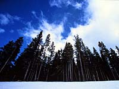

Transpiration
In this way, important minerals are transported from the roots to the leaves of the tree. Some of the water is absorbed and used by cells and tissues along the way. Excess water vapour is lost through the stomata in the leaves.
Factors affecting rate of transpiration
The rate that a tree loses through transpiration water depends upon:
- humidity
- soil moisture
- temperature
- wind
- size of tree
- age of tree
- species of tree
- tree position in the forest canopy
The rate of transpiration of broad-leaved trees is several times
greater than that of evergreens. Birch and ash have a particularly
high rate of transpiration.
Excess transpiration can kill plants, however, trees have developed
characteristics that protect them (e.g., the thin needles of evergreen
and waxy coating on cactus leaves prevent excessive transpiration
in harsh, dry climates).
Cycling of Water
 In forests, tree roots bind the soil and also hold much water.
In forests in the temperate regions of the world, up to 90 per
cent of rain is retained either in the humus layers of the forest
floor or in the plant tissues. The forest acts as a giant sponge
that plays a crucial role in the hydrological cycle. Rain is soaked
up during storms and gradually released over the days and weeks
that follow; the forest may continue to feed streams and rivers
even during dry seasons. By absorbing and then gradually releasing
water into the atmosphere, the forest helps regulate watershed
areas.
In forests, tree roots bind the soil and also hold much water.
In forests in the temperate regions of the world, up to 90 per
cent of rain is retained either in the humus layers of the forest
floor or in the plant tissues. The forest acts as a giant sponge
that plays a crucial role in the hydrological cycle. Rain is soaked
up during storms and gradually released over the days and weeks
that follow; the forest may continue to feed streams and rivers
even during dry seasons. By absorbing and then gradually releasing
water into the atmosphere, the forest helps regulate watershed
areas.
Transpiration is part of a larger process called evapotranspiration, which includes evaporation from the soil and litter layer, not just from living tissue. Evapotranspiration plays a key role in the water or hydrological cycle: without water evaporating from the earth's surface there would be no vapour to rise, cool, condense, and fall as rain, sleet, or snow. The ability of green plants to transpire, combined with evaporation from the soil and litter layer, play key roles in the continuous motion of the water cycle that supports all life.

Trees, along with other vegetation, utilize carbon dioxide during
photosynthesis, absorbing it in huge amounts. As plants transpire,
they also return life-giving oxygen to the earth's atmosphere
(oxygen is a byproduct of photosynthesis and is released through
transpiration). The burning of fossil fuel produces enormous amounts
of carbon dioxide. Forests are needed to convert this carbon dioxide
back to oxygen